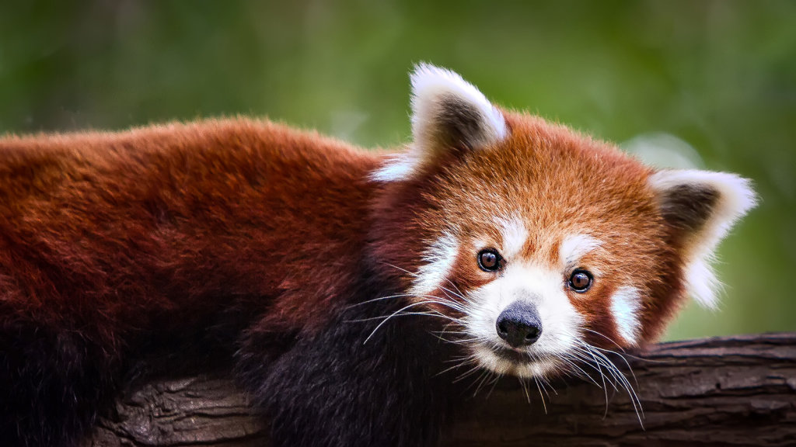

Glossary
Retractile: The ability to retract
Primate: A mammal of the group that includes lemurs, lorises, tarsiers,
monkeys, apes, and humans.
Fragmentation: the process or state of breaking or being broken into
fragments.
CITES: Convention on International Trade in Endangered Species.
NGO: Non government organization
Sources
Byjus
WWF
Bing
Coding Techniques at W3schools
wikipedia